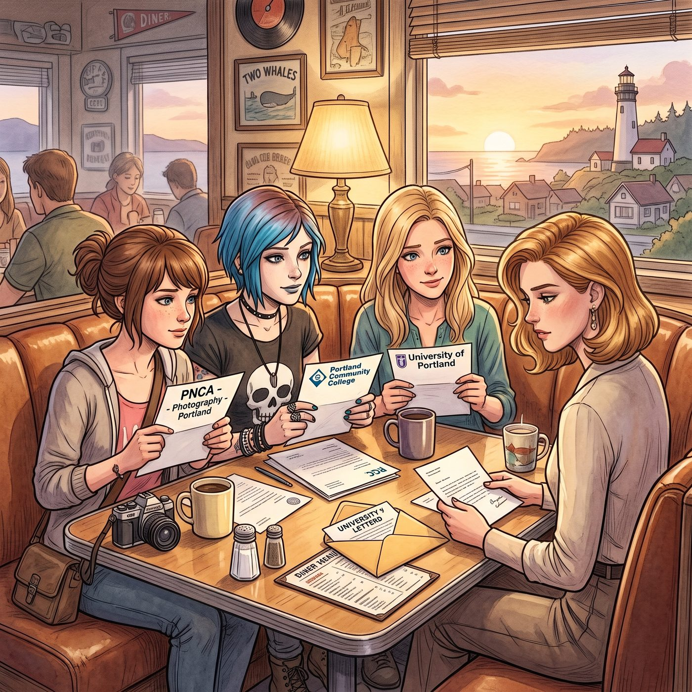

不分開的約定

一、各自的錄取通知書
畢業典禮後那個週末，四人窩在雙鯨魚餐館最角落的卡座裡，攤開了各自的錄取通知書。
「PNCA，波特蘭本地，」Max 把信封推到桌子中央，語氣裡帶著一絲慶幸，「距離最近，攝影系的作品集要求也剛好對上我這幾年拍的東西。」
「波特蘭社區學院，應用機械工程，」Chloe 也丟出自己那張皺巴巴的錄取信，「本來想直接去讀俄勒岡理工，但那邊在尤金，離妳們太遠。而且波特蘭這邊車廠多，工時費也高，老娘一邊上課一邊接活兒，日子照樣過得滋潤。」
Kate 溫柔地補充：「波特蘭大學的兒童心理學系評價很好，離市區也近，我可以繼續照顧天台的植物，順便去社區中心做志工。」
三人的目光，不約而同地落在了 Victoria 身上。
Victoria 端著咖啡，慢條斯理地啜了一口，才緩緩開口。
「華盛頓大學福斯特商學院確實給了我全額獎學金，」她語氣裡帶著一貫的傲然，「但我算過一筆帳——如果為了那個名頭，跟妳們分隔兩地，每個週末光是通勤成本和時間損耗，換算下來根本不划算。」
「所以呢？」Chloe 挑眉。
「所以我跟校方談了個方案，」Victoria 推了推眼鏡，語氣裡帶著理所當然的精明，「大部分核心課程走線上遠端修讀，只有每學期兩次的關鍵研討會需要親自飛去西雅圖。剩下的時間，我會留在波特蘭，順便把 Chase 家族在西岸的畫廊分部正式接手過來經營——反正家族信託基金本來就打算在這裡投資一個據點，我只是提前把它變成我自己的辦公室而已。」
Kate 忍不住笑了：「所以說，妳是特地把自己的大學安排，配合我們調整了？」
「別往自己臉上貼金，」Victoria 矢口否認，耳根卻悄悄泛紅，「這純粹是基於效率和資源整合的商業決策。」
「行吧行吧，」Chloe 大笑著攬過她的肩膀，「隨便妳怎麼解釋，反正結論就是——我們哪兒也不去，全部留在波特蘭。」
「珍珠區那邊剛好有間老廠房改造的 Loft 要出租，」Max 翻著手機裡的租屋資訊，眼睛發亮，「挑高夠高，光線也好，很適合改一間暗房出來。」
「還有屋頂天台，」Kate 湊過去看，「可以種植物。」
「離幾個修車廠也不遠，」Chloe 滿意地點頭。
「地段也還算能看，」Victoria 挑剔地補了一句，卻已經悄悄把那個租屋連結轉發給了自己的助理。
四人相視一笑，誰都沒有再多說什麼。這場原本可能讓她們天各一方的畢業季，最終還是被她們用各自的方式，重新兜回了同一座城市、同一個屋簷底下。
二、Joyce的信任
「話說回來，」Chloe 忽然壞笑著探過頭，故意提高音量，朝著廚房方向喊道，「媽！妳猜怎麼著，蔡斯剛才為了留在波特蘭陪我們，居然主動放棄了華盛頓大學的全額獎學金誒！妳說這是不是很反常，該不會是被什麼東西附身了吧？」
正在後廚核對明天訂單的 Joyce，聞聲探出頭來，手裡還拿著擦盤子的抹布，一臉關切地看向 Victoria。
「真的假的？」Joyce 走過來，語氣裡帶著真心的驚訝，「Victoria，妳沒事吧？要不要讓 David 帶妳去診所檢查一下，聽起來不像妳平時做事的風格。」
Victoria 一時語塞，還沒來得及開口辯解。
「妳看妳看，」Chloe 得意洋洋地攤手，「連我媽都覺得妳不對勁！」
沒想到 Joyce 話鋒一轉，轉頭瞪了 Chloe 一眼，語氣裡帶著毫不留情的篤定：「我可沒說她不對勁，我是說——Chloe Price，妳從小到大有哪次正經轉述過別人的話？上次妳跟我說 David 要把妳的皮卡送去報廢，結果人家只是提醒妳該換機油了。」
Chloe 瞬間噎住：「這、這不一樣——」
「一樣不一樣，我心裡有數。」Joyce 轉向 Victoria，語氣溫和了幾分，帶著長輩特有的篤定，「Victoria，親愛的，妳做決定向來都有自己的道理，我信妳。」
Victoria 愣了一下，隨即難得露出一絲不太自在的神情，語氣裡少了平時的傲氣，多了幾分真誠的尊敬：「謝謝妳，Joyce 阿姨。」
「妳看，」Joyce 拍了拍 Victoria 的手背，又轉頭瞪向自家女兒，「這才是懂事的孩子該有的樣子。妳跟人家學學。」
「喂！」Chloe 一臉憤憤不平，指著 Victoria 抗議，「明明我才是根正苗紅的親生女兒，憑什麼她一句話就能收買我媽！」
「因為她說話從來不加油添醋。」Joyce 頭也不回地端著抹布走回廚房，留下 Chloe 一個人杵在原地，滿臉寫著「這個世界對我不公平」的委屈。
Victoria 端起咖啡，難得沒有落井下石地嘲諷，只是嘴角悄悄勾起一抹淺淺的、帶著幾分暖意的笑容。
三、信任卡的濫用
就在 Joyce 剛一轉身、徹底走回廚房的瞬間，Victoria 迅速朝著 Chloe 做了個極其挑釁的鬼臉，嘴角勾起一抹得意到近乎囂張的笑意——顯然，她已經徹底摸清了「贏得長輩信任」這件事帶來的甜頭，正打算好好利用一番。
「妳這死丫頭——」Chloe 瞬間怒火中燒，抬手就要撲過去教訓她。
「阿姨！」Victoria 冷不防拔高聲音，眼疾手快地朝著廚房方向喊了一聲，語氣裡瞬間切換成一副楚楚可憐的無辜模樣，「妳女兒好像又要對我動粗了！」
Joyce 的腳步聲在廚房裡頓了一下。
Chloe 整個人瞬間僵住，伸到一半的手臂尷尬地懸在半空，進退兩難。她飛快地瞥了一眼廚房方向，又看了看眼前這張帶著假惺惺委屈表情的臉，深吸一口氣，硬生生把那股怒意壓了下去，改成一個生硬又彆扭的動作——一把將 Victoria 攬進懷裡，擠出一個比哭還難看的笑容。
「沒事沒事，媽，」她乾巴巴地喊道，語氣裡帶著咬牙切齒的僵硬，「我這是……在跟 Victoria 表達友好的擁抱，妳千萬別誤會。」
廚房裡，Joyce 探出半個身子，將信將疑地看了兩人一眼，見兩人姿態確實算是「和睦」，這才又縮回去繼續忙活。
Victoria 被迫困在這個尷尬的擁抱裡，卻絲毫沒有掙扎的意思，反而愈發得意地在 Chloe 耳邊壓低聲音，帶著毫不掩飾的挑釁：「看來，我這張『長輩信任卡』，還挺好用的嘛。」
「妳給我等著，」Chloe 從牙縫裡擠出這句威脅，臉上還得維持著虛假的笑容，「總有一天老娘會讓妳把這筆帳吐出來。」
「我很期待，」Victoria 笑得越發燦爛，順勢在她懷裡舒服地蹭了蹭，像是故意要把這場戲演得更逼真，「不過在那之前，妳最好乖乖表現，畢竟現在——」她眨了眨眼，「妳媽比較信任的人可是我。」
四、以牙還牙
Joyce 這時剛好又端著空盤子往廚房走去，就在她轉身的瞬間，Chloe 眼疾手快地在 Victoria 的腰側狠狠擰了一把。
「噝——」Victoria 疼得倒抽一口氣，整張臉瞬間扭曲，卻硬生生把那聲慘叫憋回了喉嚨深處，只能死死咬著牙，不敢在 Joyce 還沒完全走遠的這個節骨眼上發出太大動靜——畢竟剛才那招「阿姨我被欺負了」的把戲，總不能一天之內連續使出第二次，太刻意反而顯得心虛。
Chloe 得逞地鬆開手，大搖大擺地走回自己的座位坐下，臨坐下前，還不忘轉頭朝著 Victoria 比了個挑釁的鬼臉，把剛才那份「以牙還牙」的得意表現得淋漓盡致。
坐在一旁全程圍觀的 Kate 和 Max，終於忍不住雙雙笑出聲來，肩膀止不住地顫抖。
「妳們兩個，」Victoria 揉著發疼的腰側，惡狠狠地瞪向這兩個看戲看得毫無同情心的旁觀者，語氣裡帶著遷怒的凶狠，「有什麼好笑的！」
「沒、沒什麼，」Kate 拚命憋著笑，抹了把笑出來的眼淚，「只是覺得你們倆，感情真的很好。」
Max 也跟著點頭附和，嘴角卻藏不住笑意：「這種相處方式，確實挺……有活力的。」
Victoria 沒好氣地翻了個白眼，一時找不到更好的洩憤對象，只能繼續揉著腰側，狠狠瞪著這兩個幸災樂禍的旁觀者，把所有沒處發洩的怒氣，全都用眼神砸了過去。
五、獨立的鉤子
正當氣氛漸漸平復下來，Joyce 端著剛煮好的一壺熱茶重新走出廚房，順口補了一句。
「對了，Chloe，」她一邊給每個人的杯子續茶，語氣裡帶著再尋常不過的關心，「你們搬去波特蘭之後，記得每天出門在外注意安全，那邊車多人雜，跟阿卡迪亞灣不一樣。」
Max 手裡的叉子瞬間頓住，整張臉「唰」地一下漲紅，下意識地想把自己縮進沙發縫隙裡。
「媽！」Chloe 幾乎是條件反射地拔高了聲音，帶著一絲惱羞成怒的委屈，「妳能不能別老是當著大家的面說這種話！每次都要提，我們是有多不省心啊？！」
Joyce 被這反應弄得一愣，眨了眨眼，一臉茫然：「我只是讓妳們過馬路小心點、晚上別亂逛，怎麼了？」
「就是……」Chloe 張了張嘴，忽然意識到自己反應過度，臉上的窘迫和惱怒僵在半空中，一時不知道該怎麼圓回去。
坐在一旁的 Victoria 和 Kate 面面相覷，雙雙露出一頭霧水的表情。
「所以……」Victoria 挑眉，語氣裡帶著純粹的困惑，「這句話有什麼特別的含義嗎？」
「沒、沒有！」Chloe 慌忙擺手，耳根也跟著紅了起來，「沒有任何特別的含義！純粹是我聽膩了而已！」
Kate 歪著頭，天真地看向兩人：「阿姨不就是叮囑你們過馬路小心一點嗎？這有什麼好尷尬的？」
Max 把臉埋進手裡，發出一聲細若蚊蚋的哀嚎，顯然是想起了過去某次類似場景裡完全不同的下文，此刻卻因為 Joyce 這次純粹的字面意思，被自己過度緊張的反應弄得更加社死。
Joyce 看著女兒莫名其妙的窘態，滿臉困惑地聳聳肩，端著茶壺轉身走回廚房，嘴裡嘀咕著：「這孩子，最近是不是壓力太大了……」
窗外，雙鯨魚餐館的招牌在暮色中亮起熟悉的霓虹光，阿卡迪亞灣的故事即將翻頁，而屬於波特蘭的新篇章，才剛剛開始。